3 Dasar-dasar Image Processing
Pada Modul ini membahas dasar-dasar image processing membahas konsep dasar dalam Image Processing, yang merupakan bagian penting dari Computer Vision. Anda akan mempelajari definisi Image Processing, aplikasinya dalam kehidupan sehari-hari, dan perbedaannya dengan Computer Vision. Selain itu, Anda akan memahami konsep dasar citra digital, termasuk operasi transformasi, filtering, dan edge detection. Penggunaan Python untuk Image Processing juga akan diajarkan, termasuk instalasi dan penggunaan library seperti OpenCV, TensorFlow, dan Keras. Modul ini juga mencakup latihan praktik untuk mengaplikasikan konsep dan teknik yang telah dipelajari. Dengan menyelesaikan Modul 2, Anda akan memiliki pemahaman yang kuat tentang dasar-dasar Image Processing dan keterampilan untuk mengimplementasikannya menggunakan Python.
A. Pengenalan Image Processing
Manusia mengandalkan penglihatan mereka untuk tugas-tugas mulai dari pengenalan pola hingga naluri bertahan hidup. Kemampuan manusia untuk melakukan analisis yang kompleks dan rinci terhadap suatu karya seni berdasarkan input visual adalah sesuatu yang luar biasa. Namun, sejauh mana manusia dapat melakukan apa yang komputer lakukan dengan sangat cepat masih perlu diteliti.
Kebutuhan untuk mengekstrak informasi dari citra dan menginterpretasikan isinya telah menjadi salah satu faktor pendorong dalam perkembangan pemrosesan citra dan visi komputer selama beberapa dekade terakhir. Aplikasi pemrosesan citra meliputi berbagai aktivitas manusia, antara lain:
Aplikasi medis: Modalitas pencitraan diagnostik seperti radiografi digital, PET (tomografi emisi positron), CT (tomografi aksial komputer), MRI (pemindaian resonansi magnetik), dan fMRI (pemindaian resonansi magnetik fungsional) telah diadopsi secara luas oleh komunitas medis.
Aplikasi industri: Sistem pemrosesan citra telah berhasil digunakan dalam sistem manufaktur untuk berbagai tugas, seperti sistem keamanan, kontrol kualitas, dan pengendalian kendaraan berpemandu otomatis (AGVs).
Aplikasi militer: Skenario yang paling menantang dan kritis dalam hal kinerja pemrosesan citra adalah untuk mendukung tugas militer, mulai dari deteksi tentara atau kendaraan hingga panduan rudal dan pengenalan objek dan tugas pengintaian menggunakan kendaraan udara tak berawak atau UAV. Selain itu, aplikasi militer sering kali membutuhkan penggunaan sensor pendeteksi yang khusus, seperti kamera jarak dan kamera inframerah yang melihat ke depan.
Penegakan hukum dan keamanan: Pengawasan adalah salah satu bidang yang banyak diteliti dalam komunitas pemrosesan video.
Teknologi biometrik (seperti pengenalan sidik jari, wajah, iris, dan telapak tangan) telah menjadi subjek penelitian dalam pemrosesan citra selama lebih dari satu dekade dan kini telah digunakan secara komersial.
Elektronik konsumen: Kamera digital dan camcorder, dengan kemampuan pemrosesan yang canggih, telah membuat film dan teknologi pita analog menjadi usang. Paket perangkat lunak untuk meningkatkan, mengedit, mengatur, dan mempublikasikan citra dan video telah maju pesat dalam kompleksitasnya sambil tetap menjaga antarmuka yang ramah pengguna. TV berdefinisi tinggi, monitor, pemutar DVD, dan pemutar video pribadi (PVR) semakin meningkat popularitasnya karena harga yang terjangkau. Perkembangan jaringan dan distribusi juga telah berhasil membuat terobosan dalam perangkat lain, seperti personal digital assistants (PDA), ponsel, dan pemutar musik portabel (MP3).
Internet, khususnya World Wide Web: Ada banyak informasi visual yang tersedia di web. Kolaborasi dalam mengunggah, berbagi, dan memberi anotasi (tagging) pada video semakin populer. Menemukan dan mengambil citra dan video di web berdasarkan isinya tetap menjadi tantangan terbuka dalam penelitian.
B. Konsep Dasar Image Processing
Sebuah gambar digital merupakan larik 2D dari angka-angka yang mewakili versi sampel dari sebuah gambar. Gambar didefinisikan dalam bentuk grid, setiap lokasi grid disebut piksel. Sebuah gambar direpresentasikan oleh grid yang terbatas dan setiap nilai intensitas direpresentasikan oleh sejumlah bit yang terbatas. M x N pada gambar f(x, y) didefinisikan sebagai:
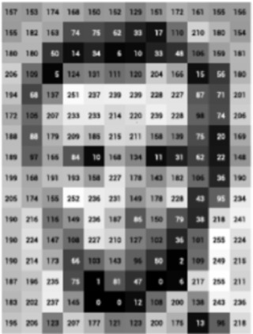
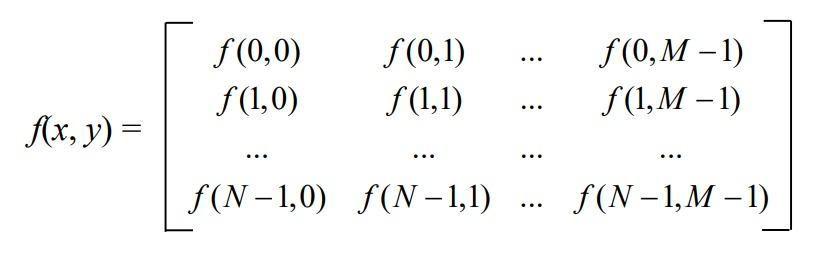
Dalam representasi ini, digunakan [0, L — 1] jumlah tingkat intensitas untuk mewakili semua nilai piksel grayscale, dan k jumlah bit digunakan untuk mewakili setiap tingkat intensitas, yaitu, L = 2k. Jadi, jumlah bit yang diperlukan untuk menyimpan gambar M x N adalah M x N x k. Kecerahan sebuah gambar merujuk pada tingkat keseluruhan cahaya atau kegelapan gambar, sementara kontras adalah perbedaan antara intensitas piksel maksimum dan minimum dalam sebuah gambar. Kecerahan dapat meningkat atau dikurangi dengan penambahan atau pengurangan sederhana pada nilai piksel.
Sebuah gambar biner direpresentasikan oleh hanya satu bit. Di sisi lain, gambar grayscale direpresentasikan oleh 8 bit. Sebuah gambar raster adalah kumpulan titik-titik, yang disebut piksel. Sebuah gambar vektor adalah kumpulan garis dan kurva yang terhubung, dan digunakan untuk menghasilkan objek.
Sebuah gambar adalah fungsi f, dari ruang R2 ke ruang R. Sebuah gambar direpresentasikan oleh f(x.y’), dan itu menunjukkan intensitas di posisi (x,y). Oleh karena itu, sebuah gambar hanya didefinisikan pada sebuah persegi panjang, dengan rentang yang terbatas, yaitu,
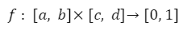
Gambar berwarna memiliki komponen Merah (R), Hijau (G), dan Biru (B). Masing-masing dari ketiga komponen R, G, B biasanya direpresentasikan oleh 8 bit, dan oleh karena itu dibutuhkan 24-bit untuk sebuah gambar berwarna. Tiga warna primer ini dicampur dalam proporsi yang berbeda untuk mendapatkan warna-warna yang berbeda. Untuk berbagai aplikasi pengolahan gambar, format RGB, HIS, YIQ, YCbCr, dll. digunakan. Sebuah gambar berwarna adalah fungsi tiga komponen, yang merupakan fungsi “nilai-vektor”, dan direpresentasikan sebagai berikut:
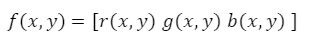
Gambar terindeks memiliki peta warna yang terkait, yang merupakan daftar dari semua warna yang digunakan dalam gambar tersebut. Contoh dari format ini adalah gambar PNG dan GIF. Jadi, berbagai jenis gambar digital dapat dijelaskan sebagai berikut.
- Gambar biner - 1 bit/pixel
- Gambar grayscale - 8 bit/pixel
- Gambar warna asli atau RGB - 24 bit/pixel
- Gambar terindeks - 8 bit/pixel
Resolusi spasial sebuah gambar mendefinisikan jumlah piksel yang digunakan untuk mencakup ruang visual yang ditangkap oleh gambar tersebut. Resolusi intensitas sebuah gambar bergantung pada jumlah bit yang digunakan untuk mewakili nilai intensitas yang berbeda. Jumlah gambar atau frame video yang ditangkap oleh kamera dalam waktu tertentu menentukan resolusi temporal. Kurangnya jumlah tingkat intensitas (resolusi intensitas rendah) di area halus sebuah gambar menghasilkan “efek kontur palsu”, yaitu, menciptakan tepi atau garis palsu di mana aslinya tidak ada. Juga “efek kotak-kotak” terjadi ketika resolusi spasial sebuah gambar sangat rendah.
Pengolahan gambar digital berurusan dengan manipulasi dan analisis gambar digital oleh sistem digital. Sebuah operasi pengolahan gambar biasanya mendefinisikan gambar baru g dalam hal gambar masukan f. Seperti yang ditunjukkan dalam Gambar 3.6, kita dapat mengubah rentang f menjadi g(x, y) = t(f(x,y)), atau kita dapat mengubah domain f menjadi g(x,y) = f(tx(x,y),ty(x,y)). Nilai piksel dimodifikasi dalam transformasi pertama (Gambar 3.5); sedangkan posisi piksel spasial berubah dalam transformasi kedua (Gambar 3.6). Domain sebuah gambar dapat diubah dengan memutar dan menyesuaikan skala gambar seperti yang diilustrasikan dalam Gambar 3.6.
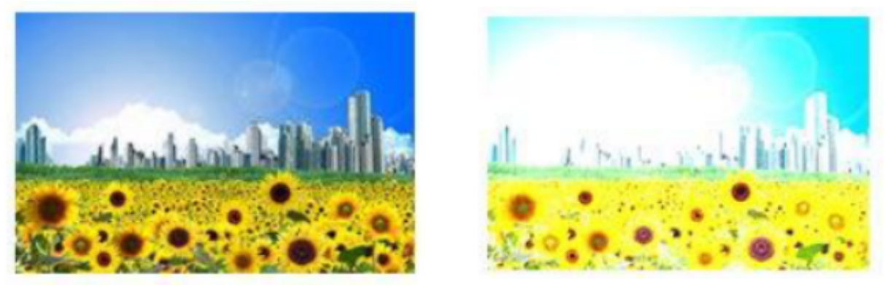
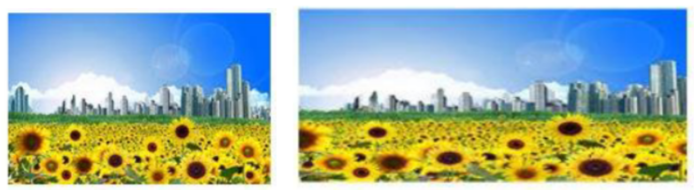
C. Python Untuk Image Processing
Dalam tutorial ini, Anda akan menemukan fungsi dasar untuk memuat, memanipulasi, dan menampilkan gambar. Informasi utama dari gambar akan diperoleh, seperti ukuran, jumlah saluran, kelas penyimpanan, dan lain-lain. Setelah itu, Anda akan dapat melakukan filter klasik pertama Anda.
Proses yang berbeda akan dilakukan pada gambar-gambar berikut ini:
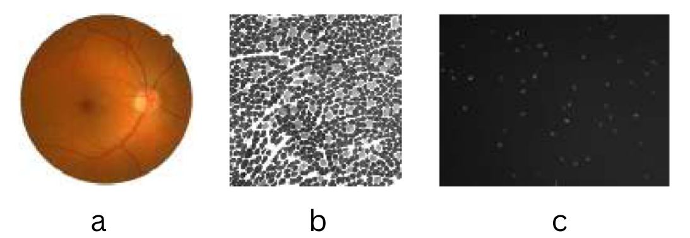
Spatial Filter
Filtering
Seperti halnya filter air yang menghilangkan kotoran, filter pemrosesan gambar menghapus fitur yang tidak diinginkan (seperti noise) dari sebuah gambar. Setiap filter memiliki utilitas khusus dan dirancang untuk menghilangkan jenis noise tertentu atau meningkatkan aspek tertentu dari gambar. Kami akan membahas banyak filter beserta tujuan dan efek mereka pada gambar.
Untuk melakukan filtering, digunakan filter atau masker. Biasanya, ini berupa jendela persegi dua dimensi yang bergerak melintasi gambar hanya mempengaruhi satu piksel pada satu waktu. Setiap angka dalam filter dikenal sebagai koefisien. Koefisien dalam filter menentukan efek dari filter dan akibatnya gambar keluaran. Mari kita pertimbangkan filter 3x3, F, yang diberikan dalam Tabel 3.1.
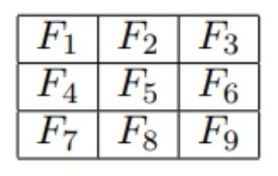
Jika (i, j) adalah piksel dalam gambar, maka sub-gambar di sekitar (i, j) dengan dimensi yang sama dengan filter akan dipertimbangkan untuk filtering. Pusat filter ditempatkan agar tumpang tindih dengan (i, j). Piksel-piksel dalam sub-gambar dikalikan dengan koefisien yang sesuai dalam filter. Hal ini menghasilkan matriks dengan ukuran yang sama dengan filter. Matriks ini disederhanakan menggunakan persamaan matematika untuk mendapatkan satu nilai yang akan menggantikan nilai piksel pada (i, j) dalam gambar. Persamaan matematika yang tepat tergantung pada jenis filter. Misalnya, dalam kasus filter rata-rata, nilai F adalah -7, di mana N adalah jumlah elemen dalam filter. Gambar yang difilter diperoleh dengan mengulangi proses penempatan filter pada setiap piksel dalam gambar, memperoleh satu nilai, dan menggantikan nilai piksel dalam gambar asli. Proses ini memindahkan jendela filter melintasi gambar disebut konvolusi dalam domain spasial.
Mari kita pertimbangkan sub-gambar berikut dari gambar I, yang berpusat pada (i, j).
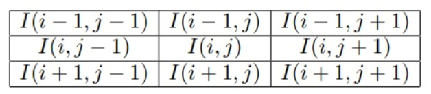
Konvolusi filter yang diberikan dalam Gambar 3.8 dengan sub-gambar dalam Gambar 3.9 diberikan sebagai berikut:
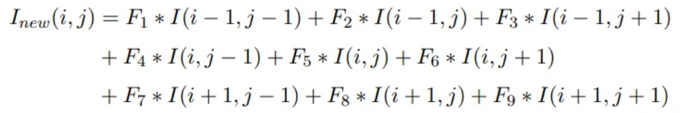
Di mana Inew(i, j) adalah nilai keluaran pada lokasi (i, j). Proses ini harus diulang untuk setiap piksel dalam gambar. Karena filter memainkan peran penting dalam proses konvolusi, filter juga dikenal sebagai kernel konvolusi.
Operasi konvolusi harus dilakukan pada setiap piksel dalam gambar, termasuk piksel di batas gambar. Ketika filter ditempatkan pada piksel batas, sebagian filter akan berada di luar batas gambar. Karena nilai piksel di luar batas tidak ada, nilai-nilai baru harus dibuat sebelum konvolusi. Proses ini untuk menciptakan nilai piksel di luar batas disebut padding. Piksel yang dipadatkan dapat diasumsikan nol atau nilai tetap. Pilihan padding lainnya seperti nearest neighbor atau reflect menciptakan piksel yang dipadatkan menggunakan nilai piksel dalam gambar. Dalam kasus nol, piksel yang dipadatkan semua bernilai nol. Dalam kasus konstan, piksel yang dipadatkan mengambil nilai spesifik. Dalam kasus reflect, piksel yang dipadatkan mengambil nilai dari baris atau kolom terakhir. Piksel yang dipadatkan hanya dipertimbangkan untuk konvolusi dan akan dibuang setelah konvolusi.
Mari kita pertimbangkan contoh untuk menunjukkan berbagai pilihan padding. Gambar 3.10 adalah gambar input berukuran 7x7 yang akan dikonvolusi menggunakan filter 3x5 dengan pusat filter di (1,2). Untuk memasukkan piksel batas dalam konvolusi, kita memasukkan gambar dengan satu baris di atas dan satu baris di bawah serta dua kolom di sebelah kiri dan dua kolom di sebelah kanan. Secara umum, ukuran filter menentukan jumlah baris dan kolom yang akan dipadatkan ke gambar.
- Padding dengan nol: Semua piksel yang dipadatkan diberi nilai nol (Gambar 3.11).
- Padding dengan konstanta: Nilai konstan 5 digunakan untuk semua piksel yang dipadatkan (Gambar 3.12). Nilai konstan dapat dipilih berdasarkan jenis gambar yang sedang diproses.
- Nearest neighbor: Nilai dari baris atau kolom terakhir (Gambar 3.13) digunakan untuk padding.
- Reflect: Nilai dari baris atau kolom terakhir (Gambar 3.14) dipantulkan melintasi batas gambar.
- Wrap: Dalam opsi wrap seperti yang ditunjukkan dalam Gambar 3.15, baris pertama (atau kolom) setelah batas mengambil nilai yang sama dengan baris pertama (atau kolom) dalam gambar, dan seterusnya.
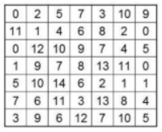
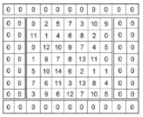
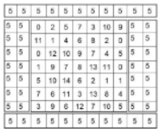
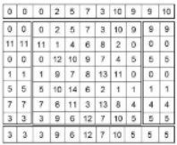
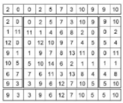
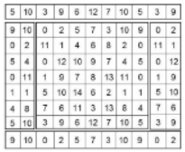
Shape Detection Filter
Frangi Filter
Kegunaan dari Filter Frangi [AFFV98] yaitu mendeteksi objek yang mirip dengan pembuluh darah pada sebuah gambar. Sebelum membahas matematika dibaliknya, pembahasan akan dimulai dengan ide fundamental dari Frangi itu sendiri. Pada gambar 3.16 berisi dua objek, salah satu objek memanjang ke satu arah, akan tetapi tidak ke arah lainnya, sedangkan objek kedua berbentuk persegi. Secara proporsional, panah ortogonal digambar dimana panjangnya sepanjang suatu arah tertentu. Dengan mendapatkan nilai eigen dari kedua objek tersebut, maka kita dapat mengukur perbedaan geometri kualitatif ini. Objek yang memanjang, nilai eigennya akan lebih besar pada arah panah yang lebih panjang serta lebih kecil pada arah panah yang lebih pendek. Sedangkan objek persegi, nilai eigen pada arah panah yang lebih panjang serupa dengan nilai eigen pada arah panah yang lebih pendek. Filter Frangi menggunakan gambar turunan kedua (Hessian) sebagai dasar perhitungan nilai eigen, bukan menggunakan gambar asli. Turunan kedua atau Hessian merupakan representasi matematis dari perubahan intensitas piksel dalam gambar. Dengan menggunakan gambar turunan kedua, Filter Frangi dapat mengidentifikasi dan menghitung nilai eigen yang mencerminkan karakteristik objek mirip pembuluh darah dengan lebih baik daripada menggunakan gambar asli. Maka dari itu, penggunaan gambar turunan kedua memungkinkan Filter Frangi untuk memperoleh informasi yang lebih relevan dan memperbaiki kemampuan deteksi objek pembuluh darah.
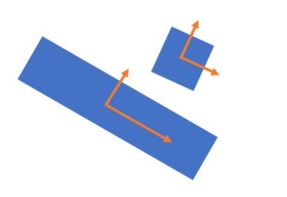
Noise yang disebabkan oleh turunan dapat dikurangi menggunakan konvolusi dimana gambar akan dihaluskan. Pada konteks umum, metode yang digunakan adalah penghalusan Gaussian. Penghalusan Gaussian merupakan teknik pengolahan citra yang menggunakan filter Gaussian untuk mengurangi nois dan menyamarkan detail tajam pada gambar. Dalam buku ini akan ditunjukkan bahwa mencari turunan dari gambar yang dihaluskan dengan konvolusi Gaussian setara dengan mencari turunan dari Gaussian yang dikonvolusikan dengan gambar. Selanjutnya, kami akan menghitung turunan kedua dari Gaussian dengan menggunakan rumus berikut ini, di mana gσ merupakan fungsi Gaussian.
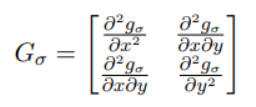
Selanjutnya, menentukan turunan kedua lokal (Hessian) dan nilai eigen-nya. Untuk gambar 2D, setiap koordinat piksel akan memiliki dua nilai eigen (λ1 dan λ2). Kemudian, nilai eigen diurutkan dalam urutan meningkat. Sebuah piksel dianggap sebagai bagian dari struktur tabung atau mirip pembuluh darah jika λ1 ≈ 0 dan |λ2| > |λ1|. Sedangkan untuk citra 3D, setiap koordinat voxel akan memiliki tiga nilai eigen (λ1, λ2, dan λ3). Nilai eigen tersebut kemudian diurutkan dalam urutan meningkat. Sebuah voxel dianggap sebagai bagian dari struktur tabung atau mirip pembuluh darah jika λ1 ≈ 0 sementara λ2 dan λ3 memiliki nilai absolut yang tinggi yang hampir sama dan memiliki tanda yang sama. Pembuluh yang terlihat terang akan memiliki nilai positif untuk λ2 dan λ3, sedangkan pembuluh yang lebih gelap akan memiliki nilai negatif untuk λ2 dan λ3.
Rangkuman
- Filter rata-rata menghaluskan gambar sambil mengaburkan bagian tepi dalam gambar.
- Filter median efektif dalam menghilangkan noise salt-and-pepper.
- Filter turunan pertama yang paling banyak digunakan adalah Sobel, Prewitt, dan Canny.
- Baik Laplacian maupun LoG adalah filter turunan kedua yang populer. Laplacian sangat sensitif terhadap noise. Pada LoG, Gaussian menghaluskan gambar sehingga noise dari Laplacian dapat dikompensasi. Namun, LoG mengalami efek ‘spaghetti’. (*Efek ‘spaghetti’ merujuk pada hasil filter LoG yang menghasilkan garis-garis tipis seperti spageti yang melintang di sekitar tepi objek dalam gambar. Efek ini terjadi karena penggunaan kernel LoG yang besar atau parameter yang tidak sesuai, yang mengakibatkan respons yang berlebihan dan menciptakan garis-garis halus yang terlalu banyak pada tepi objek dalam gambar. Hasilnya adalah gambar yang terdistorsi dan sulit diinterpretasikan dengan jelas)
- Filter Frangi digunakan untuk mendeteksi struktur yang mirip dengan pembuluh darah.